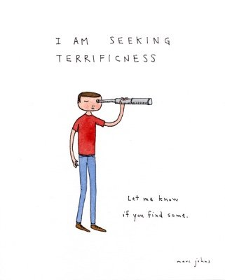

Lots of Mind-Tickler readers are seekers of one sort or another.
Whether the hunt is for enlightenment, love, kindness, success or just to feel better, many folks are out there chasing something better, something righter.
Even though all those quotes, books, teachers and sages out there say, “What you’re seeking is already here.”
Don’t you love that?
Yeah perhaps not.
Because when you’re hurting or dissatisfied, the idea that non-seeking is "better" seems to belittle the pervasive sense that things just aren’t right. Which can then add a sense of failure in this spiritual game. Which can then even make you angry or despondent and inclined to say, “Screw this.”
So what are they talking about? I mean, peace, enlightenment, better feelings, better situations… let’s face it, none of that seems to be here. Or at least not as much or as frequently as you’ve been told they're supposed to be.
So naturally you want something else. More enlightenment. More peace. Less suffering. Better everything, please.
Certainly not this.
Seeking seems absolutely necessary.
There’s a ton of obvious wrongness. And it’s not like that’s a breeze to fix. The betterment being sought- awakening, improvement of life, feelings, self and others- well, it’s exhausting and never-ending trying to find it.
After all, where does “better” hang out? Is it sitting on a shelf somewhere, on the chairs in satsang, in some head waiting patiently? Can it be scored by behaving just so, or by embodying, sitting with, solving, inquiring? Maybe all it takes is another political leader, another body at the dining table, more paper in a wallet. Or maybe different sensations in a solar plexus might take care of it all?
Aw hell. How are you supposed to get some “better” if you don’t know where it is?
Sheesh, what a screw-up existence is. After millennia producing these life forms, shouldn't it have learned the error of its ways and fixed this mess?
Stupid existence.
Ok so, that can’t be right, can it? So let’s consider…. maybe we have missed something.
Let’s imagine for a moment that there’s thick unmovable mud up to our ankles. We look down, see the mud, start figuring out how the mud got there, what caused it, how we feel about it, how to tolerate it, how to make it less immovable, how to make it go away, how to secure the future so there’s never any mud ever again. We envision all the possible consequences that will surely happen if this mud thing isn’t figured out pronto.
With all that dedicated focus, mud is going to seem like the only thing that matters. I mean who’s going to bother paying attention to where there is no mud- that area from the ankles up- when there’s this serious issue at hand?
Although isn’t that exactly what we’re seeking with all that solution-finding? A non-mud experience?
There it is, above the ankles.
And now, substitute the word “pain” for “mud” and it gets clearer that when one focuses on pain, non-pain (non-mud) is ignored. So life feels like constant unrelenting suffering. It feels impossible to notice the vast amount of self and life and experience which is not hurting and fine, when pain is all that is seen.
Even though tons of non-pain is happening.
So the sages may have been right.
Because whether we're seeking enlightenment or consciousness or the end of suffering, sadness, or anger…
It could be that the, “You already are what you seek” stuff is just a matter of attention. Attention to the above-the-ankles-totally-fine experience that’s already here, instead of only to below-the-ankles wrongness.
Because if we are able to know what we feel, then consciousness is already present and awake to us (whatever ‘us’ is) and therefore doesn’t need to be sought. If we are able to seek peace, then peace must be already present in order to provide the room to do that seeking, and therefore doesn’t need to be sought. If we are able to seek consciousness, then consciousness must already be present in order to do that seeking, and therefore doesn’t need to be sought.
No need to seek what’s here already.
Y’know, because… here. Already.
This is great news. After all, it’s a whole lot less work to notice the non-mud, non-pain that’s already here than it is to figure out how to create a non-mud existence from scratch.
Like we were god or existence or something.
Now, this is not suggesting to not feel pain, or to ignore pain, or to “sit with” pain. This is an invitation to consider the possibility that…
We are capable of noticing the “part” of us that is ok whether pain is here or not.
We are capable of noticing that even when we hurt, we are also ok, also awake, also conscious and consciousness.
Even when we think we’re not.
We are the human having an experience, the awareness of the experience, AND the experience itself.
Which means there’s nothing to seek. That which we’ve been seeking- we are all of it. Always have been.
We just didn’t realize.
And of course, seeking is as good an experience as any other too.
Which leaves us with nowhere else to go, nothing else to chase.
Nothing to seek.
Not even the end of seeking.
Seeking Seeking
